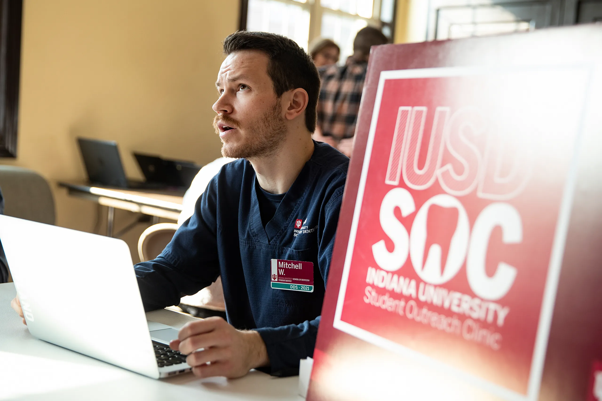
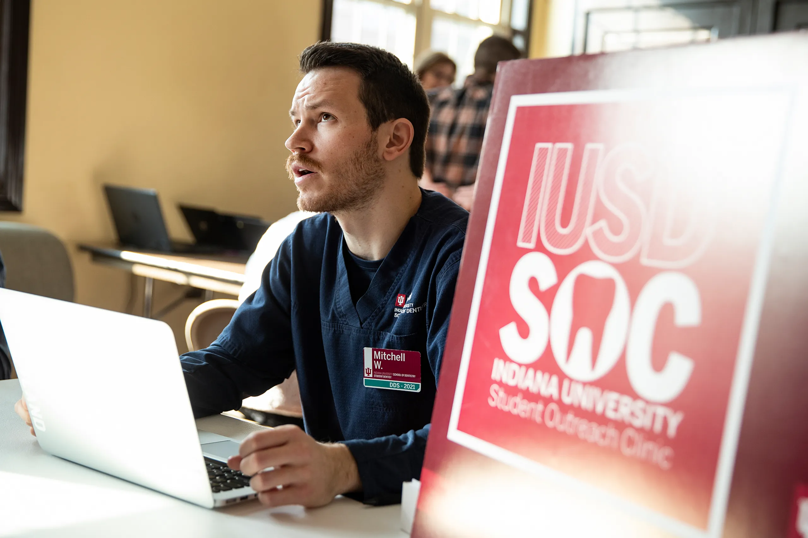
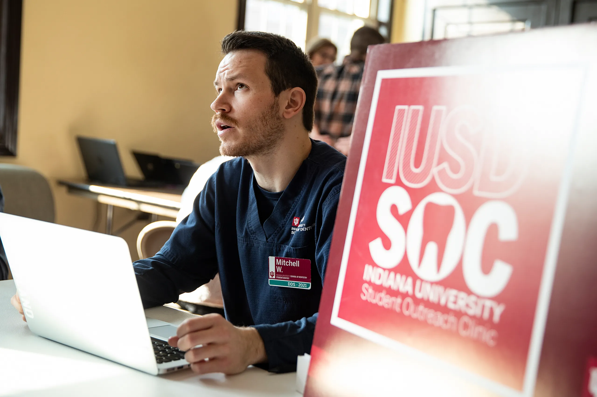
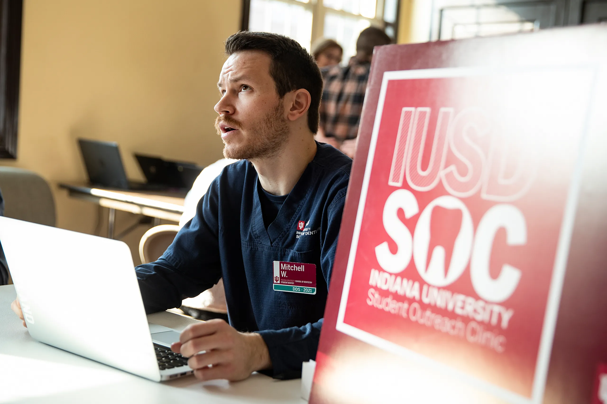

 

We are a student run organization through Robert H. McKinney School of Law. Volunteers are current law students with McKinney. We have been a partner with the clinic since 2010. We provide law students with real, hands-on experience with helping individuals with their legal needs. We serve as a resource bank to connect neighbors to various legal services. We can help with legal matters including, but not limited to, landlord-tenant issues, benefit denial or management, name changes, trusts & estates, family law, domestic violence, and immigration.
All law students are welcome to sign up. Please contact us at iusoclegal@gmail.com for signup instructions.